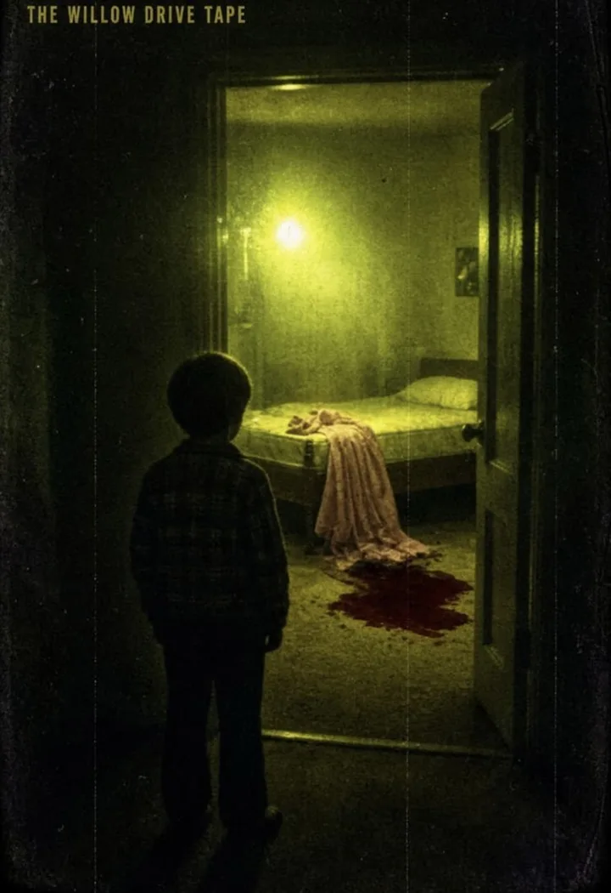
The Willow Drive Tape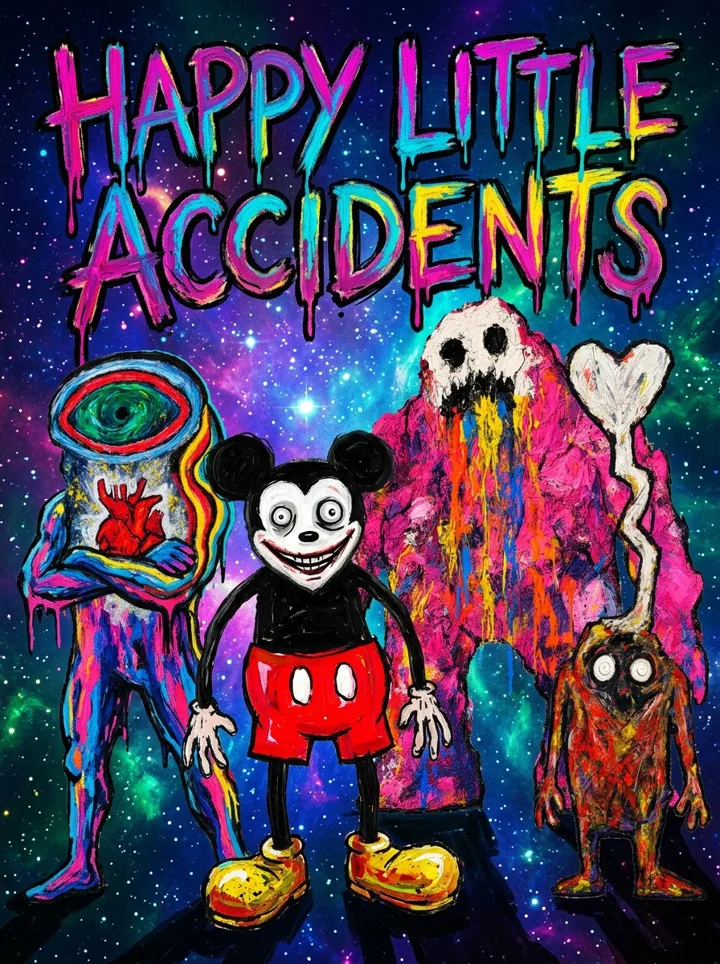
Happy Little Accidents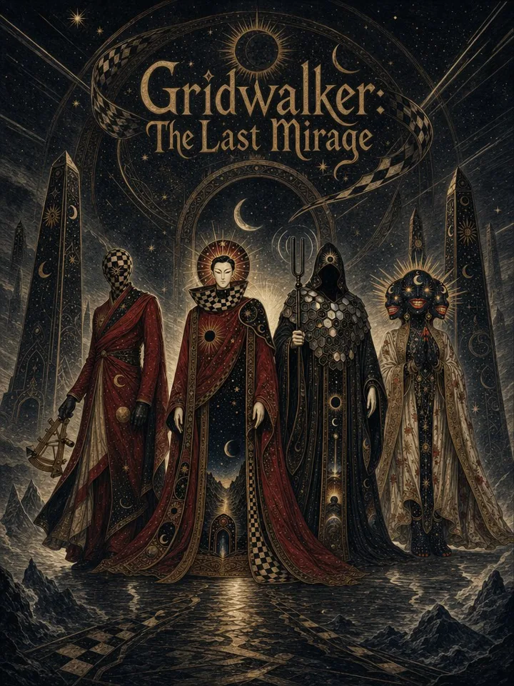
Gridwalker: The Last Mirage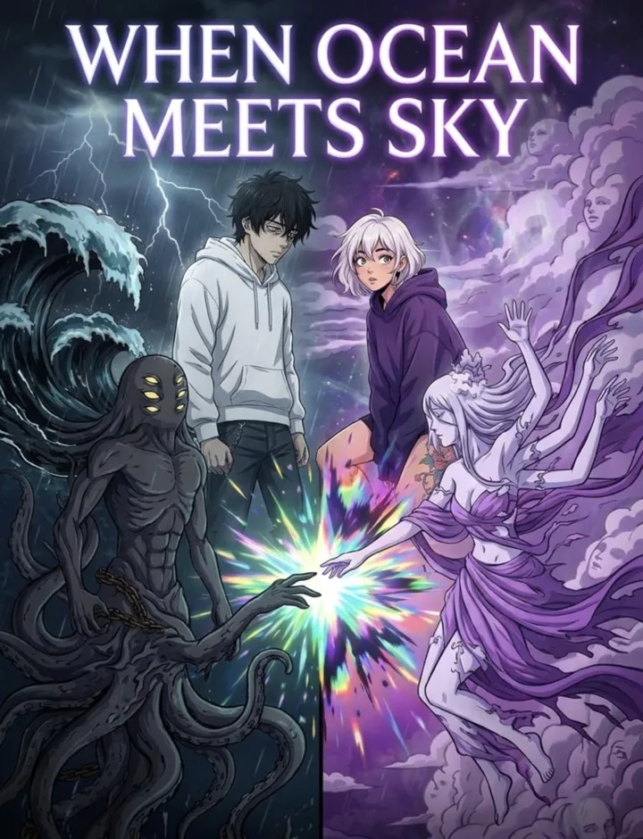
When Ocean Meets Sky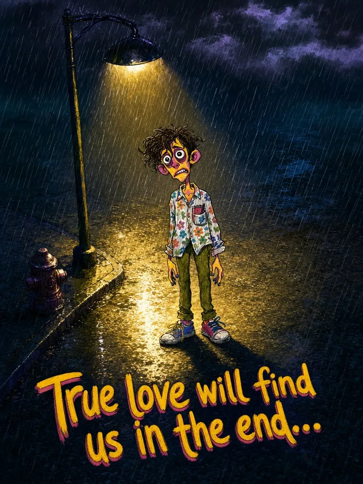
True love will find us in the end...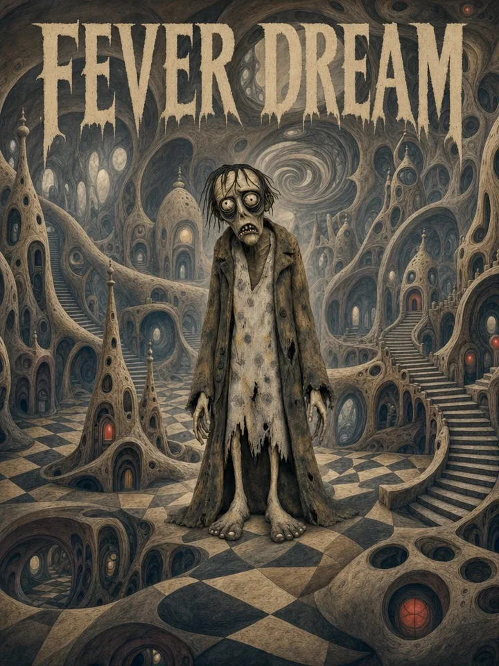
FEVER DREAM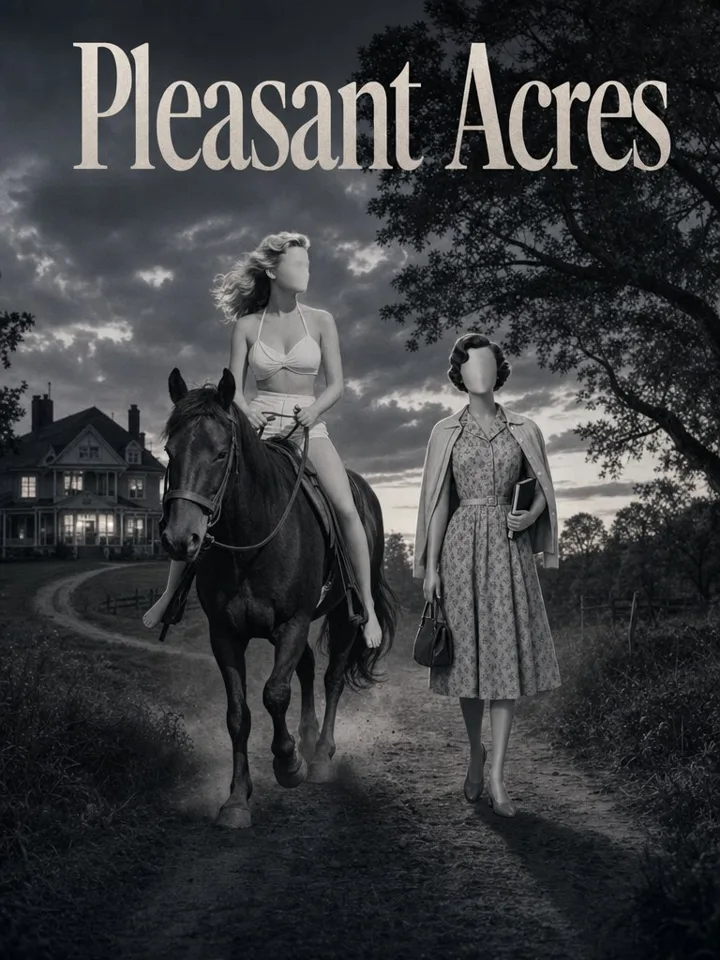
Pleasant Acres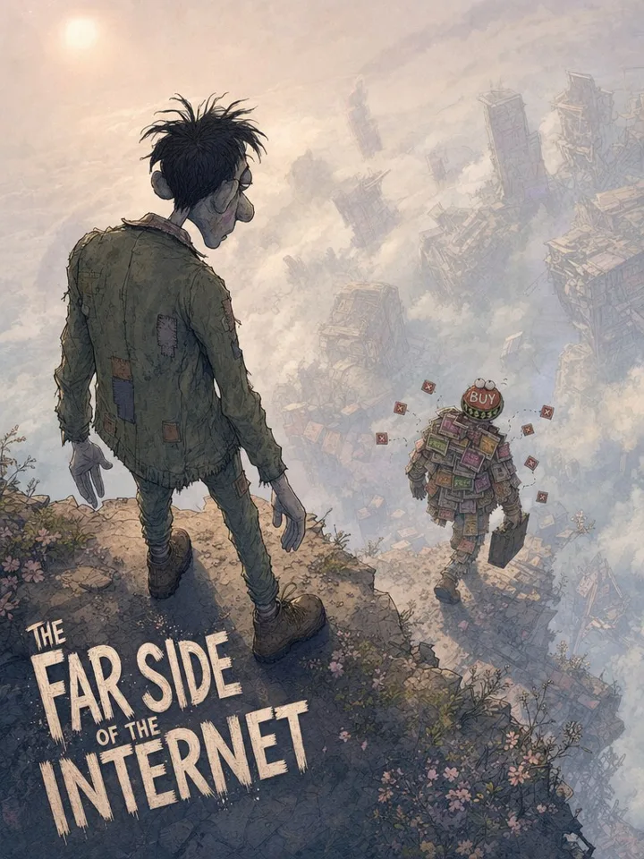
The Far Side of the Internet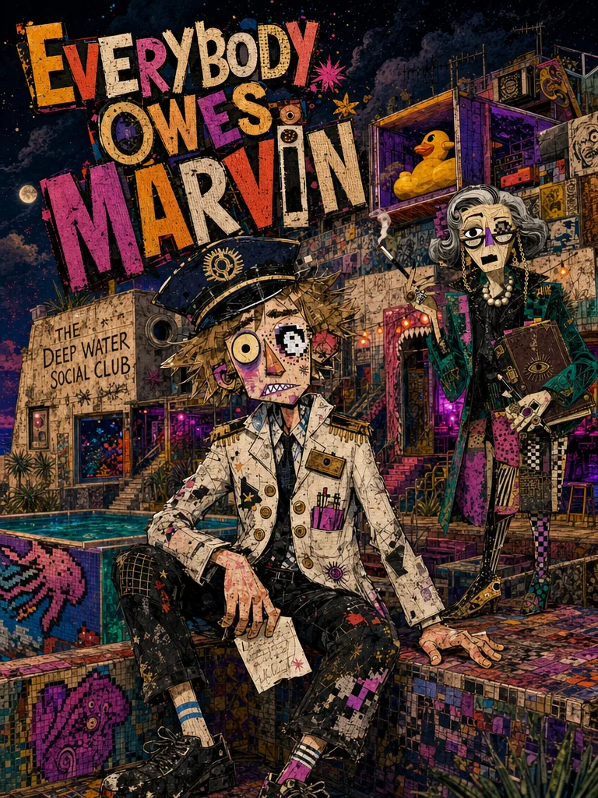
Everybody Owes Marvin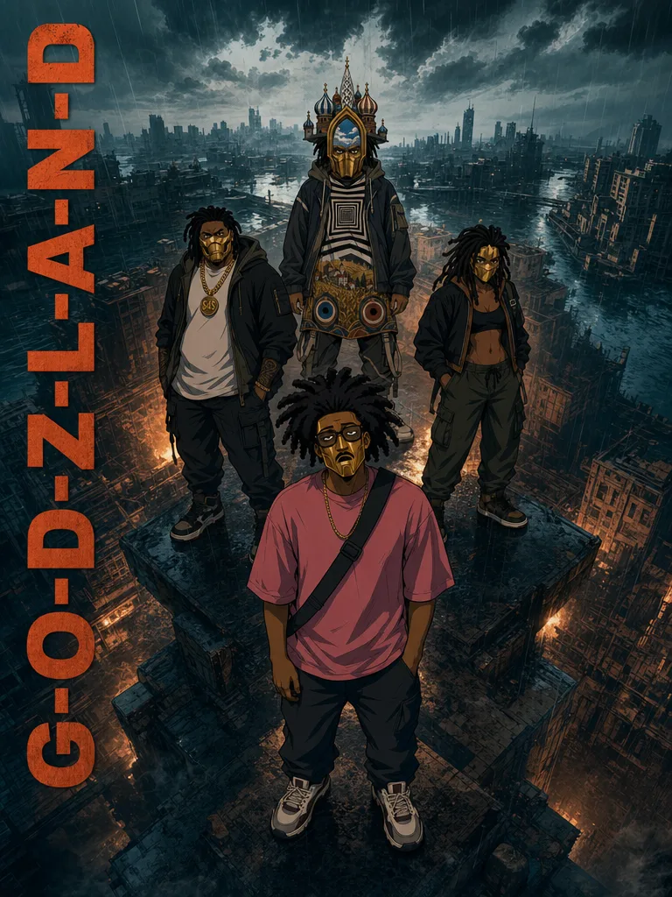
Godzland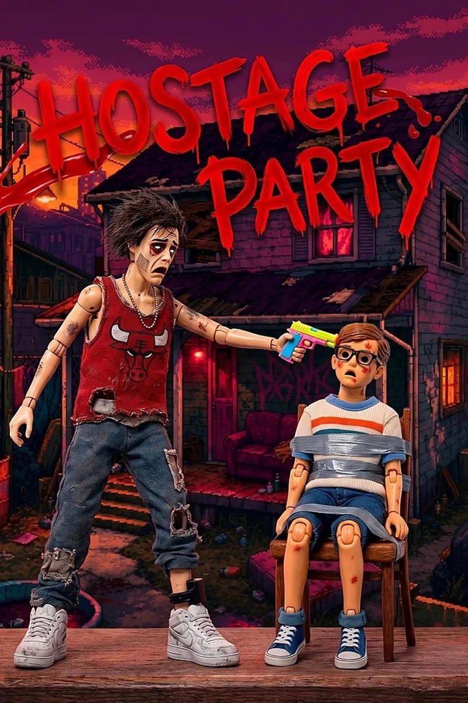
Hostage Party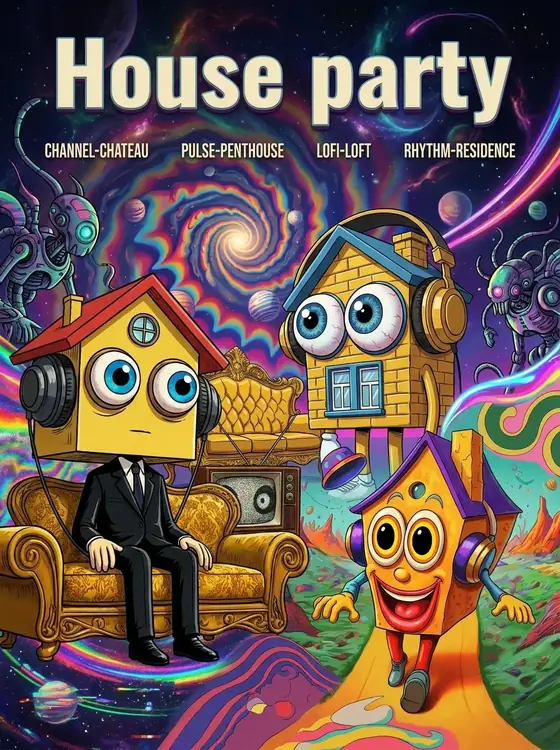
House PartyHorror / analog found footage
The Willow Drive Tape
A father's basement scale model of his street starts lighting up on its own, and whatever the model shows, the street does next.
Pilot material 2 episodes, 2:00 each: "4:40 to Willow" and "Basement Secrets"
Show bible
Status. A 2:00 film exists.
Genre. Horror, analog found-footage drama.
Format. Short-form episodes of 2 to 10 minutes, assembled from "recovered tapes." Every episode is footage somebody shot, found or confiscated: home movies, a camcorder diary, visiting-room security tape, a drive filmed through a windshield. The story arrives out of order and the audience assembles the timeline.
Logline. On one unremarkable suburban street in 1981, a father's basement scale model of the neighborhood starts lighting up on its own, and whatever happens to the model happens to the street. A slow-burn horror about the man who built it, the family who lived above it, and the neighbors who were never supposed to find out.
Premise. Willow Drive is a street that minds its own business: station wagons, chain-link fences, church halls, lawn sprinklers. In the basement workshop of one house, a quiet draftsman has spent years building a perfect miniature of the whole neighborhood, every house and tree wired with tiny working lights. Then the model starts changing on its own. A light comes on in a house that's empty. A car appears on a street where no car is parked. Whatever the model shows, the street does next.
The Modelmaker believes the model is a warning system, and that if he tends it carefully enough he can keep the street safe. His wife believes it is consuming him. Their young son, never without a game controller in his hands, is the only one who understands the truth neither parent will say aloud: the model isn't just showing the street. It's an interface. What gets played on it gets played out on Willow Drive. Meanwhile, a neighbor is filming everything.
Characters.
| Character | Description |
|---|---|
| The Modelmaker | Heavyset, curly-haired, thick glasses, plaid shirts. A draftsman by trade and an obsessive by nature who speaks softly and explains too much. He built the model to protect the street; whether it protects anything is the question the series hangs on. In later tapes his eyes catch the light wrong |
| Marla, his wife | Floral blouses, direct, tired. The family's conscience and its anchor to the normal world. She pretends not to count the nights he doesn't come up from the basement. Her fear isn't the model; it's that he has started preferring it |
| The Boy | Their young son: glasses, striped polos, a game controller grafted to his hands. Adults assume he is playing games. He is, and the game is downstairs on the table: the street. The only character who treats the model matter-of-factly, which makes him the most frightening person on Willow Drive |
| The Neighbor with the Camera | A young woman with a camcorder documenting the street house by house, resident by resident, for reasons she deflects. Her tapes are the spine of the series. She is the audience's camera and the one person collecting evidence; what she wants with it is a season-long mystery |
| The Inmate | Lean, tattooed, quiet. First seen as a young man in a yard in striped swim shorts, being filmed. Later seen years on across a prison visiting-room table, speaking to the Modelmaker as if they share a debt. What the model showed him, and what he did about it, is the central unanswered question |
| The Girl in the Pink Dress | Seen once in the recovered tapes: a young woman at a church-hall gathering who folds forward onto the table, face down, whispering to no one, while the room politely continues around her. The street's first casualty, or its first messenger |
World rules.
- The model is never wrong. If a light goes on in the model, it goes on on the street. The argument is only ever about timing, and whether it is prediction or cause.
- The tapes don't lie, but they're never in order. Every episode withholds its date. Part of the dread is realizing which tape came first.
- The map. A hand-drawn map of the street changes hands at night, passed in backyards and under work lights to men with anchor tattoos. Whoever holds it can find the one house on Willow Drive that isn't on the street.
- Nothing is said at horror-movie volume. Everything is discussed in kitchens, yards, visiting rooms and cars, at conversational level, while something impossible sits in the room. The horror is suburban.
Episode engine. Each episode is one tape, labeled by source: Basement, Summer '81. Visiting Room B. Ruth's camera, the yard. Each tape gives one street event from one angle and exactly one new fact about the model. Recurring locations carry the mythology: the basement sessions (the Modelmaker presenting the model like evidence), the yard interviews (the camera neighbor filming residents who don't know why), the visiting room (the Inmate's side of the story, in pieces) and the night drives (the map, the routes, the house that isn't there).
Tone and look. Sun-bleached 16mm / VHS Americana: plaid, wood paneling, church-hall folding tables, bare bulbs, long evening light. Warm nostalgia curdling slowly into dread. No jump scares; the scares are recognitions: a light on in the model that shouldn't be, a face at the window of a house that's supposed to be empty, eyes reflecting a light that isn't in the room.
Episode seeds.
- The First Light. The model lights a house that burned down years before anyone built on the lot.
- Visiting Hours. The Modelmaker's prison visits begin; the Inmate asks about the model before he asks about anything else.
- The Map Changes Hands. A night delivery in a backyard, and the man who takes the map folds it like it's already ruined him.
- Church Hall. The Girl in the Pink Dress, and the gathering that agreed not to remember her.
- The House That Isn't There. The camera neighbor finds the address the map points to. Her tape ends early.
- Lights Out on Willow Drive. One by one, starting with the model.
Tape look (Betamax pass). Where the recovered tapes are dubbed copies, add soft luma, red/green color bleed, tracking bands, head-switching noise along the bottom edge, dropout streaks and rolling distortion on cuts.
Dark fantasy
Happy Little Accidents
Rejected painted characters race for a sentence nobody ever wrote.
Pilot material Episode "Beat The Devil Out" (1:46)
Show bible
Earlier called The God Prompt, which is the name of the sentence at the center of the story.
Genre. Dark fantasy.
Logline. A blank-faced portrait rescues a child made of outlines, and the factions chasing the sentence forming inside the child's body are the ones writing it.
Premise. Beneath every painting an artist has layered over lies a living world of rejected characters: abandoned landscapes, incomplete figures and erased neighborhoods that struggle to survive each time a canvas is scraped clean. Scarlette, a blank-faced portrait who delivers messages through the cracks between painted worlds, becomes the reluctant center of a desperate race when she rescues Margin, a child made only of black outlines whose body begins filling with words. The factions believe the words form a legendary God Prompt, capable of rewriting reality itself. Alongside the world-weary patchwork repairman Bristle, and against the dangerously sincere Restorationist leader Vale, Scarlette crosses painted worlds: fires hidden under cheerful meadows, and family portraits with missing people. She has to make impossible choices about what is worth saving.
The twist. The God Prompt was never written. Every betrayal, rescue and sacrifice the factions commit in their race to possess it is quietly building the sentence, word by word, inside Margin.
Themes. Whether the things a creator throws away deserve to choose their own ending, and whether the finished sentence will offer salvation or confess every sin committed to write it.
Tone and look. Dark, visually electric, emotionally ruthless. Thick expressive oil-paint and crayon textures in saturated color against a cosmic starfield. The key art shows a painted figure with a black-hole eye and an exposed heart, a grinning black cartoon creature with wide eyes, and a skeletal figure dripping neon paint.
Cast. 21 characters.
| Character | Notes |
|---|---|
| Scarlette | Blank-faced portrait; message-carrier between worlds |
| Margin | Child made of outlines, filling with words |
| Bristle | Patchwork repairman |
| Vale | Restorationist faction leader |
| Others | Scumble, Cordis, Whistle, Kroma, Batik, Munge, Harrow, The Curator, Sloppy, Al, Jolie, Sara, Smeera, Zorn, Yam-Yal, Verdig, Tinto |
Status. Poster, full synopsis and cast exist. Posted two weeks ago.
Sci-Fi
Gridwalker: The Last Mirage
A man hides inside a mathematical dreamworld to outrun grief.
Pilot material Episode "Pizza For A Weeping Sun" (1:56), 15-minute film script, 38-chapter novel
Show bible
Also titled Origin Canvas of the Weeping Sun, the 38-chapter, 423-page companion novel.
Genre. Sci-Fi. Existential dread blended with methodical wonder. Hauntingly beautiful and psychologically perilous.
Logline. In a universe collapsing into darkness, a reality-salvager in a crimson suit crosses a warped checkerboard wasteland to find the one place where the cosmos can be re-ignited before the last star goes out.
Premise. Caelen Voss strides across the Liminal Grid, a perspective-warped checkerboard stretching between dying worlds. He wears a sharp crimson suit and a checkerboard mask, and is guided only by the light of the Weeping Sun King, a colossal celestial effigy that pours the last warmth in existence from its anguished, open mouth. Voss carries a brass prismatic sextant that anchors him to fracturing physical space. He is hunting the Origin Canvas. Standing in his way is the Cult of the Prism, an order of obsidian-cowled, faceless mystics who worship entropy and use harmonic frequencies and mirror-arrays to collapse the grid into void. Each episode plunges him deeper into surrealist settlements and ruined celestial architecture, and forces him to endure the Sun King's maddening gaze, a memetic hazard that threatens to dissolve his mind into ecstatic oblivion. The central question is whether one man's calm resolve can outpace the heat death of everything.
Core mechanics.
- Warmth: the scarce resource. Anchors, shortcuts and stairways cost warmth, and the story keeps count of the debt.
- The Sextant: anchors Voss to a fracture; its brass facets also hide riddles and star charts.
- The Sun King's Gaze: a memetic hazard Voss survives by counting heartbeats and holding silence.
- The Prism Inquisitors: erase checkerboard paths behind him and collapse the grid planes.
- Void-doors: doorway architecture that closes behind every step.
Characters (from the cast list). The roster is 80+ designed characters, among them Caelen Voss, Aris Thorne, The Prism Inquisitor / The Void Enforcer, Kyomi-Glyph, Koda-Ren, Paxon-Gyl, Caelum-Ocularis, Heliarch-Velt, Lyra-Mora, Heliodor-Vane, Ouro-Vitas, Varo-Sol, Eon-Vandor, Syzygy Prime, Chronos-Vael, Xen-Phos the Chrono-Seraph, Aethelgard of the Gilded Fold, Soma-Vas, Elias the Tide-Binder, Zephyrin, Kaelith the Weaver, Aetherion Prime, Vesper Thrum, Nyx-Vara, Solas Rex & Luma-Sylph, Sol-Amon, Sylon-Kore, Kuro-Vane, Cryptic Wisdom, Oscar Pheelgood, Vektor-Glint, Sonos-Vant, Zenith-Lepus, VHF-Lepus, Cathode-Vail, Zeron-Kyl, Baud-Ruin, Astron-Vorn, Echo-Zyl, Oculith-Void, Sultana Sirena, Kora-Vex, The Ocular Oracle, Mordant-Mite, Oracular Astra, Agaric-Vee, Bov-Astra, Petal-Nix, Flor-Oculi, Eos-Iris, Vesta-Veyn, Chromacore-Zin, Static-Null, Glim-Gazer, Vapor-Vox, Oculon-Zyr, Cosma-Vell, Ichor-Sol the Radiant Mourner, plus Sloppy, Al and Noemotion.
Existing episode. "Farewell Frequency" (0:30).
Novel map (38 chapters).
| Part | Chapters | Titles |
|---|---|---|
| 1. Entering the Rift | 1-10 | Crimson Suit Meets the Checkerboard Rift; Prismatic Sextant Locks a Fracture-Anchor; The Weeping Sun King's Gaze Tests Mind; Obsidian-Cowled Footprints Lead Nowhere; Crimson Resolve Against Ecstatic Oblivion; Mirror-Array Harmonics Collapse the Stairway; Riddle in the Sextant's Brass Facets; The Checkerboard Market Rewrites Its Vendors; Who Am I When Heat Feels Like Worship?; A Sextant Star Chart Turns Inside-Out |
| 2. Hunting the Canvas | 11-20 | The Origin Canvas Is Hidden in Silence; Void-Doors Close Behind Every Step; Warmth Debt: Paying for Every Anchor; The Prism Inquisitors Erase the Map; A Childlike Echo Names the Origin Canvas; Doorway Architecture Opens Into a Mirror Sea; The Reflection That Refuses to Fade; Harmonic Frequencies Turn Breathing Into Math; A Ruined Observatory Shows the Canvas's Coordinates; The Prism Bargain: Entropy for Warmth |
| 3. The Wrong Origin | 21-31 | Voss's Calm Resolve Breaks for One Second; The Void-Array Opens a Wrong Origin; Counting Harmonic Overtones Finds the Lie; The Sun King's Mouth Drains Color From Tiles; Warmth Tax Forces a Brutal Shortcut; Wrong Alignment Triggers a Prism Pursuit; The Page-Pattern Reveals the Canvas Condition; Warmth Runs Out Before the Final Step; Counting Heartbeats Beats the Gaze; The Prism Array Erases the Dais; Warmth-Silence Alignment Finally Locks |
| 4. Re-ignition | 32-38 | The Canvas Demands a True Name; Re-ignition Ignites-Then Prism Counter-Sings; The Sun King's Gaze Becomes a Blessing; Checkerboard Paths Return, But Not for Free; Memory-Shares: What the Canvas Took; Entropy Scars Summon a Final Inquiry; Origin Canvas Reborn, and Voss Answers |
Gridwalker: The Last Mirage, 15-minute film
Format. A 15:00 film in 33 locked sequences of 15 or 30 seconds each, prompted in Higgsfield Cinema Studio. The screenplay uses a framing device: a clinic in the real world, and the dreamworld the main character is plugged into.
The frame. Arthur Morris is a precise, emotionally calcified actuary in his 30s in a damp charcoal trench coat, carrying an analog chronometer. For three years he has tried to engineer a version of the fire that killed his wife, one where the boiler didn't blow. He goes six levels down to a backstreet clinic and asks the Doc, an aging cyberneticist and ex-combat medic, for forty-eight hours of pure coordinate space: a closed loop where nothing burns down because someone forgot to watch the pressure valve. The Doc plugs a brass cassette into a port behind his ear. His one warning: at the end of the road there is a dying star, and he has to look at it.
The dream. Morris becomes Caelen Voss, with a checkerboard-wrapped head and a crimson suit, walking an infinite black-and-white plane under the Weeping Sun King. The film then plays as one continuous run:
- The Vitrified Haven. Gaunt pilgrims around fading embers; the Hermit Astronomer, Orik, shows Voss the unwritten glyph "The Origin Canvas." His sextant locks onto it.
- The Shattered Plane. A Prism Inquisitor tears the floor into the void. Voss races the collapsing tiles and uses the sextant's mirror to reflect the Sun King's beam and shatter the Inquisitor's crystal.
- The Refraction Labyrinth. Gravity bends at 90 degrees under revolving glass prisms, and the cult's 50-meter floating Black Prism opens seven golden eyes. Voss fires a needle of starlight into its central eye.
- The Caldera of Tears. Voss unties the checkerboard wrap from his head and leaps into the falling light.
- The Hollow Titan. In a cathedral of dead stars he reaches the Dais of Calipers and the Sun King's heart. The Grand Inquisitor appears with the Null-Glaive and clamps the core.
- The Caliper Duel. Voss duels the Inquisitor on the brass beams, survives a telepathic vision of golden frames showing dying worlds, and breaks the clamp.
- The Origin Canvas. In a white plenum he destroys the Inquisitor, who is revealed as an empty cavity of quiet air that wanted rest.
- The Last Light. He sets the sextant on the Primordial Easel, dials the recorded angles, and the mathematics are flawless. The light does not return. The star goes out. In the dark, Voss says, "It's cold."
- The Cold Wake-Up. Morris wakes in the clinic. The Doc tells him the alignment is always zero, and that stars don't care about actuaries. "It went out anyway." Morris leaves his chronometer on the tray and walks into the rain asking, "What do I do with the dark?" The Doc: "You get used to the cold. And then you put on a thicker coat." Fade to black.
Characters (film).
| Character | Description |
|---|---|
| Arthur Morris / Caelen Voss | Lead. Actuary in the real world; crimson-suited, checkerboard-hooded surveyor in the dream |
| The Doc | Mid-60s, scarred bald crown, loupes pushed up on his forehead, leather apron, fingerless gloves; unsentimental kindness |
| The Grand Inquisitor | 2.5 m figure in a diamond-shaped obsidian cowl and black pleated robes, a mirror for a face, wielding the Null-Glaive |
| Orik, the Hermit Astronomer | Frail man in his 80s with a brass multi-lens monocle bolted to his temple, velvet tunic, ink-stained fingers |
Sets (film). The Industrial Corridor; The Doc's Clinic; The Liminal Grid (checkerboard wastes); The Vitrified Riverbed and Haven; The Cartographer's Crypt (observatory); The Refraction Labyrinth; The Dais of Calipers (Heart Vault); The Caldera of Tears.
Sequence ledger (the full 15:00).
| # | Sequence | Time | Length |
|---|---|---|---|
| 1 | The Meridian of Dust | 0:00 | 15 s |
| 2 | The Vitrified Riverbed | 0:15 | 15 s |
| 3 | The Gathering Shadow | 0:30 | 15 s |
| 4 | The Vanishing Runway | 0:45 | 15 s |
| 5 | The Threshold of the Sun King | 1:00 | 15 s |
| 6 | The Vitrified Haven | 1:15 | 30 s |
| 7 | The Cartographer's Crypt | 1:45 | 30 s |
| 8 | The Harmonic Siege | 2:15 | 30 s |
| 9 | The Refraction Labyrinth | 2:45 | 30 s |
| 10 | Awakening of the Black Prism | 3:15 | 30 s |
| 11 | The Prismatic Counter-Strike | 3:45 | 30 s |
| 12 | The Caldera of Tears | 4:15 | 30 s |
| 13 | The Solar Horizon Leap | 4:45 | 15 s |
| 14 | The Plasma Chute Fall | 5:00 | 30 s |
| 15 | The Necropolis of Dead Stars | 5:30 | 30 s |
| 16 | The Weeping Heart | 6:00 | 30 s |
| 17 | The Grand Inquisitor's Descent | 6:30 | 30 s |
| 18 | The Harmonic Strangulation | 7:00 | 30 s |
| 19 | The Duel on the Calipers | 7:30 | 30 s |
| 20 | The Memetic Dissolution | 8:00 | 30 s |
| 21 | The Solar Conduit | 8:30 | 30 s |
| 22 | Unveiling of the Origin Canvas | 9:00 | 30 s |
| 23 | The Gateway to the Void | 9:30 | 30 s |
| 24 | The White Plenum | 10:00 | 30 s |
| 25 | The Ink-Spill of Entropy | 10:30 | 30 s |
| 26 | The Drafting of Reality | 11:00 | 30 s |
| 27 | The Convergence Clash | 11:30 | 30 s |
| 28 | Dissolution of the Obsidian Shell | 12:00 | 30 s |
| 29 | The Primordial Easel | 12:30 | 30 s |
| 30 | The Dial Alignment | 13:00 | 30 s |
| 31 | The Fading Corona | 13:30 | 30 s |
| 32 | The Absolute Extinction | 14:00 | 30 s |
| 33 | The Cold Wake-Up | 14:30 | 30 s |
Production rules (from the bible).
- Single-face rule: erase the head on the full-body front panel of every character turnaround so models do not cross-contaminate faces.
- Neutral mid-grey seamless background for every character sheet, never white.
- Environments framed at three-quarter perspective for depth and parallax.
- Natural 180-degree shutter motion blur; never prompt for no blur.
- Choose the lens by feel: 24 mm for wide action, 35 mm for observational, 50 mm for dialogue, 85 mm for portraits.
- Physics over tropes: describe weight transfer, friction, momentum and cloth drag instead of emotion.
- Tools: Cinema Studio 4.0 (timeline), Seedance 2.5 (multi-shot video up to 30 s), Soul Cinema (set plates), GPT Image 2.0 (inpainting, turnaround cleanup).
Anime
When Ocean Meets Sky
Two people lose each other inside a shared psychedelic journey.
Pilot material 5 episodes, including the 8:33 first chapter
Show bible
Genre. Anime, psychological and cosmic horror with a recovery arc.
Logline. Two close friends take a shared psychedelic journey that splits them into opposing dimensions, and they have to find each other again to get out.
Look. Bold 3px cel-shaded manga linework keeps Kai and Sora grounded against hyper-detailed, shifting environments. Pop-surrealist and horror-vacui details creep in from the edges: a microwave clock glitching from 8:01 to an impossible time, sunset stripes bending across the floor, shadows filling with swirling purple pattern. Atmosphere is quiet, thick and expectant, shot low and intimate. The poster splits the world in two: a stormy ocean on the left, a purple celestial sky on the right.
Characters.
| Character | Role |
|---|---|
| Kai (@kai.horizon) | Black-haired, white hoodie, chain at his belt. Becomes a tentacled, four-yellow-eyed ocean entity in the deep of the trip |
| Sora (@sora.trips) | White-haired, purple hoodie, floral leg tattoo. Becomes a luminous cloud-goddess with many arms |
| Variants | @sora.goddess, @sora.demon, and several @horizon.\* forms used for the creatures that appear |
Structure of the 480-shot script. The script is a continuous shot list, with no dialogue-only scenes.
| Shots | Movement |
|---|---|
| 1-40 | The bedroom at dusk. Dust, manga, the pill, the clock flipping to 8:00. Reality begins to ripple. Cut to black, then reality snaps into separated dimensions |
| 40-110 | Transformation: Sora's tattoos spread like roots and vines, and she begins to sink into a living, fleshy world |
| 110-185 | Isolation and loss of self. Kai loops through time and forgets Sora's face while his consciousness becomes the mask itself. Sora, as the goddess, remembers a white hoodie, chains and him |
| 185-260 | Reunion. The two realities overlap, Kai's grey skin returns to human, and he rebuilds his bedroom by will alone |
| 260-350 | Return. They come down, lean on each other, and sit in silence with their backs to the bed. "We made it back" |
| 350-440 | Aftermath. Texting each other to check in, a therapy session where Kai can't tell the whole truth, and both visibly changed |
| 440-480 | Acceptance. They lift each other up, embrace, walk out hand in hand and look at the camera one last time before a fade to white |
Recurring motifs. A moth trapped against glass, a clock, a small mask necklace Kai gave Sora, a single frame of a yellow eye and the screen flickering purple for a millisecond.
Status. Poster, a complete 480-shot generation script and five episodes exist.
Romance
True love will find us in the end...
Two people with schizophrenia share their hallucinations when they look at each other.
Pilot material 4 public episodes on Showrunner, 3:16 first episode
Show bible
Genre. Romance, psychological drama with a surreal edge.
Logline. Two people with severe schizophrenia fall in love in an all-night diner, where their private hallucinations spill into a shared space whenever they look at each other.
Premise. Welcome to eternal 3:00 AM. To the rest of the world, life goes on as normal: the streets are quiet and the neon hums. Inside a cramped, faded diner booth, Elliot and Vera are trapped in a private apocalypse. Elliot battles the screeching Infinite Metronome and the whispering Static Specter. Vera fights the regret-looping Groove Cutter and the protective barriers of her Glass Aegis. Because the monsters are internal, no one else can see them. Except when the two look at each other. Then their trauma fuses, the invisible bleeds into a shared space, and monstrous shared hallucinations like the Apocalyptic Static materialize between them. Their romance becomes a high-stakes psychological battleground.
Central question. Will true love find them in the end, or are they just feeding each other's psychosis? The show's answer so far: learning to trust another person's ghost is the hardest thing you'll ever do, and perhaps the only thing keeping you alive.
Look. Saturated, hand-inked caricature portraits of people and monsters, set against rain-slicked yellow-gold street light and deep navy night. The poster shows Elliot alone under a streetlamp, hollow-eyed in a floral shirt, with the tagline in hand-painted yellow script.
Cast. Elliot, Vera, Casper, Umit (two versions), The Grin, Nix, Harrow, Gorge, Arthur, Buster, Quigley, Omen, and more.
World. The all-night diner (neon sign, jukebox, crescent moon), the rain-soaked street outside.
Status. Poster, character art and five episodes exist.
Handling note. The pitch treats the illness with empathy and keeps the hallucinations as the antagonists rather than the characters.
Horror
FEVER DREAM
A man crosses his own comatose mind, dissolving the creatures his fears made.
Pilot material Episode "Cerebellum Static" (0:57)
Show bible
Genre. Horror, dark surrealism, and a meditation on isolation.
Logline. A nameless man wanders the endless, decaying architecture of his own comatose mind, searching for the edge of the dream so he can wake up.
Premise. A haggard man traverses a non-Euclidean nightmare: melting checkerboard deserts, fleshy spiraling forests and crumbling organic monuments. His only company is the Figments, grotesque, anatomically unstable creatures born from his deepest fears, forgotten regrets and physical anguish. Each is a distorted mirror of his own fractured psyche. He cannot fight them. To move forward, he has to confront, recognize and accept the broken pieces of himself they represent, dissolving them back into the neon-and-sepia sludge they came from. It is a lonely meditation on isolation, the vastness of the human mind, and the exhausting act of simply enduring.
Look. 90s dark-surrealist aesthetic in sepia, ochre and bruised purple. The poster shows the lead in a tattered coat and nightgown on a checkerboard floor, surrounded by hollow spires, stairways and glowing red doorways, with a swirling vortex overhead. The title letters drip like wax.
Rules of the world.
- The lead has no name.
- Figments cannot be destroyed by force. They can only be understood.
- The dream has an edge, and finding it is the goal.
Existing episode. "Cerebellum Static" (0:57): three strange hosts try to keep their show running amid a signal leak and a disintegrating reality inside a failing electronic component. A CRT-and-neon room and a pink, glowing spill on the floor feature in the thumbnail.
Status. Poster, series description and one episode exist. A character list was not included in what I received.
Drama / mockumentary
Pleasant Acres
A 1950s lakeside resort sitcom where the impossible slowly seeps in.
Pilot material Episode "Beyond the Sunlit Edge" (3:46)
Show bible
Genre. Drama, mockumentary sitcom, slow-creep reality horror.
Logline. A 1950s lakeside resort community, filmed as a polished black-and-white documentary, is slowly revealed to be an experiment, and the documentary crew may be part of it.
Premise. A rotating ensemble of cheerful new residents, feuding neighbors and overzealous social committees navigates the wholesome rhythms of communal summer living, all captured in pristine black-and-white 16mm documentary style. The show plays its premise straight at first: romance blooms over shuffleboard, a cabin dispute threatens the Fourth of July pageant, and the Activities Director rules her clipboard with an iron fist. Then, slowly and imperceptibly, the impossible bleeds in. A resident appears in decade-old resort footage. An announcement board predicts private conversations word for word. Two identical versions of the same man attend the same Tuesday potluck and no one notices. The crew's calm camera treats every anomaly with the same earnestness as a broken rowboat motor, which raises the question of whether the filmmakers are witnesses to the experiment or instruments of it. Themes: conformity, memory and the sinister comfort of a place that never wants you to leave.
The central relationship. Silas Wren is a gigantic, silent, masked figure at the lake, and everyone assumes he is the threat. His mother, Mrs. Evelyn Wren, calmly manipulates events from inside Pleasant Acres, convinced she is protecting both her son and the resort. Silas spends much of his time keeping people out of places she has made dangerous.
Visual rules.
- Everything stays in degraded black-and-white 16mm documentary language.
- Never use slick slasher cinematography on Silas. Sometimes the camera does not even zoom: he is a tiny white-masked figure hundreds of feet behind the characters, caught by accident rather than framed as a monster.
- Character faces are blank, mannequin-like surfaces.
Cast.
| Group | Characters |
|---|---|
| The Wrens | Evelyn Wren, Silas Wren |
| Residents | Bev Thorne, Marge Hollowell, Pearl Whitlock, Sylvia Gable, Hazel Montgomery, Iris Whitby, Jules West, Dottie Miller, Gordie Glass, Franny Wells, Clara Mae Higgins, Artie Finch, Lila Vance, Bonnie Sterling |
| Staff | Director Evelyn Pruitt |
| Recurring across series | Sloppy, Al |
Existing scene. "The Faceless Lake."
Status. Poster, full description, cast and at least one scene exist.
Comedy / weird fiction
The Far Side of the Internet
A tired maintenance worker and a tiny know-it-all tour a physical internet.
Pilot material Episode "Blender Frog and the 404 Heist" (1:00); Open Internet Flats short (3:58)
Show bible
Genre. Deadpan comedy and weird fiction, with creeping cosmic strangeness.
Logline. An exhausted internet maintenance worker and a tiny, confidently wrong creature tour the strange physical world beyond the websites everyone uses.
Premise. Beyond the websites, feeds and search bars lies an enormous, bizarre physical world assembled from everything humanity has ever uploaded, deleted, forgotten or accidentally created. Memes grow wild in fields, broken links are literal dead-end roads, and pop-up ads wander the streets hawking products no one makes anymore. The guides are 404, a lanky, perpetually exhausted maintenance worker whose job description reads "FIX WHATEVER'S WRONG," and Dot, a tiny round creature who lives in his tool bag, dispenses catastrophically bad advice, and insists, incorrectly, that she invented the internet. Each short episode sends the pair to a new corner of this hand-drawn digital world. Server farms are actual farms, cloud storage floats through the sky raining vacation photos, and The Algorithm turns out to be a pathetic little creature behind a grocery store, frantically guessing what everyone wants.
Tone. Deadpan, stupid-smart, occasionally beautiful. Absurdist one-off comic adventures, with creeping background details suggesting something stranger: the internet may not be something humans created at all. We simply found a way to connect to it.
Look. Hand-drawn, painterly storybook illustration in dusty, sun-bleached pastels. Poster: a patched-jacket 404 looking out over a sea of fog and crumbling skyscraper ruins while a figure built from stacked browser windows with a "BUY" button face walks away.
Characters.
| Character | Notes |
|---|---|
| 404 | Lanky, hollow-eyed maintenance worker; the straight man |
| Dot | Tiny, round, tool-bag stowaway; claims she invented the internet |
| Win-Z | A walking pile of pop-up windows with a BUY button for a face |
| Malware | A CRT-headed pest |
| Clippy | The old office assistant, reimagined |
| Bonzi | A purple gorilla mascot |
| Napster | A blue cat with headphones |
| Others | Jeeves, Purée, Mosaic, The Arbiter, Tom-01, Kudos, Hash, Buster, Guest, Milicent, Any Key, Zip |
Sets (12 shown).
| Set | Looks like |
|---|---|
| The Satoshi Deep-Mines | A crypto-mining cavern |
| The Pirate Bay | A cove with a pirate ship |
| The Rune-Scrap Commons | A medieval hamlet |
| The Azerothian Sprawl | A fantasy town marked "Goldshire" |
| The Habbo High-Rise | A resort hotel |
| The Onion Catacombs | Cobwebbed dark-web tunnels |
| The Neopian Menagerie | A zoo |
| The GeoCities Gated Community | A cheerful 90s homepage suburb |
| The DatPiff Delta | A wasteland of cassettes and mixtapes |
| The Internet Archive | A library with reel-to-reel and floppy-disk statues |
| The Newgrounds Badlands | A ruined Flash arcade |
| The Open Internet Flats | A dry plain with a tower on the horizon |
Format. Short episodes of about one minute, one corner of the world each.
Status. Poster, description, 19 characters, 12 sets and an official episode (1:00) exist.
Comedy
Everybody Owes Marvin
Aboard a ship that never docks, a crew of fugitives owes everything to a fixer named Marvin, who has vanished.
Pilot material Episode "Beyond The Endless Horizon" (1:00)
Show bible
Genre. Comedy.
Aboard a decadent ocean liner that hasn't docked in years, the Deep Water Social Club serves strong drinks and questionable cabaret to a crew of fugitives, runaways, and reinvented souls who all got aboard thanks to one fixer named Marvin. When Marvin vanishes, handwritten requests start appearing in his looping script, calling in favors that range from the mundane (cover a bartender's shift) to the absurd (marry a total stranger, keep the woman in cabin twelve from seeing the ocean). The ensemble includes a disgraced celebrity chef hiding in the galley, a perpetually unlucky lounge singer, a retired con artist who runs the club's tab ledger like a crime syndicate, and a wide-eyed new steward who is the only one who actually wants to find land. Petty grudges snowball into elaborate disasters and unlikely friendships bloom over unpaid debts, all while a creeping mystery asks who is really steering the ship and why they'll do anything to keep it at sea. The tone is a surreal, deadpan ensemble comedy with a melancholy undercurrent, where the promise of reaching shore feels less like salvation and more like a threat.
Status. Poster and Episode 1 (1:00) exist.
Action / arcade horror
Godzland
Four gold-masked brawlers trapped in a black-market arcade experiment.
Pilot material Episode "Live Feed" (6:58), series bible, 12-episode season
Show bible
Working title. Five options are in the bible; the top pick is GOLD MASK // EXECUTABLE (abbreviates to GMX). Others: BAD SECTOR: GOLD, NULL & VOID, ROOTKIT: ZERO BUFFER, GOLD RUSH .EXE.
Logline. Four greedy, gold-masked brawlers are trapped inside a black-market arcade cabinet by a Mad Scientist who infects their simulation with a lethal virus to see what happens.
Premise. A borderline-psychopathic Mad Scientist runs the most unhinged experiment in existence. He traps a crew of 2D, streetwear-clad anti-heroes, each permanently fused to a gleaming gold mask, inside hyper-realistic live-action worlds and cranks reality's settings to maximum chaos. The whole thing lives in an underground arcade cabinet. When simple torture bores him, he injects a corrupting virus into the motherboard to delete them. Every episode starts mundane (drinks at a bar, a beach day, picking up a package) and collapses into a side-scrolling beat-'em-up with explosions, weaponized wildlife and creeping dread.
Look. Flat, deadpan 2D cartoon characters dropped into cinematic, photorealistic live-action environments. Loud, offensive, R-rated, built to be clipped and shared. There is no central conflict so much as a perpetual state of unresolved catastrophe.
The crew. Null, Orbit, Hertz and Allen. They are selfish, traumatized survivors hooked on cheap dopamine and coin-op scrap.
| Character | Known traits |
|---|---|
| Null | Has fourth-wall awareness. Hallucinates debug text, wireframes and the Scientist's eyes in the clouds. Reads the code; the crew's de facto navigator |
| Orbit | Muscle and instinct; hoards pickups, sells caches, believes the strongest deserve to live |
| Hertz | Prone to obsession and lies; threatens with a lead pipe; forms a bond with a corrupted AI |
| Allen | The reluctant moral instinct; saves others against his own selfish impulses |
| The Mad Scientist | Off-screen sociopath controlling the simulation, voyeuristic, drops viruses and hosts "challenges" |
Engine. The bible rebuilds 12 narrative genres and 24 storyline templates for this show. Each template has a 5-beat timeline, so any genre can be run as a one-off or serialized.
| Genre engine | Core idea |
|---|---|
| Action & Adventure | Kinetic momentum, countdown clocks against root-directory wipes |
| Sci-Fi | Fourth-wall horror, memory leaks, broken physics |
| Anime | Limit-break escalation against photoreal backgrounds |
| Comedy | Deadpan 2D logic versus photoreal consequences |
| Sitcom | Circular reset: always back on the same couch |
| Crime | Beat the answers out of NPCs in grimy alleys |
| Drama | Paranoia over limited VRAM; shifting alliances |
| Reality TV | Confessionals while the world explodes behind |
| Fantasy | Mythic quest toward the motherboard's core CPU |
| Family | Found-family dysfunction in a box |
| Western | Frontier justice in an unrendered desert |
| Romance | Absurd emotional proximity, falling for a glitch |
Season 1: 12 episodes. One continuous R-rated arc, each episode built on one of the genre engines above.
| # | Title | Engine | Logline |
|---|---|---|---|
| 1 | Buffer Overflow | Action | A turf shakedown in a rainy meatpacking district turns into a slaughter when the first virus wave drops |
| 2 | Dirty Memory | Crime | An allied data broker is found dissolved in a penthouse; the crew interrogates the underworld |
| 3 | The Long Fall | Sci-Fi | Gravity and logic decay in the financial district; the crew blinds the virus with render-distance fog |
| 4 | Rationing Blood | Drama | Locked in a basement with one health vial, greed becomes a knife fight |
| 5 | The Feed | Reality TV | The Scientist turns their survival into a gladiatorial broadcast with scoreboards |
| 6 | The False Baseline | Sitcom | The crew wakes up in the same diner again and again, trapped in a loop |
| 7 | Root Access | Fantasy | Null leads a pilgrimage to the forbidden Kernel Well for unpatched admin rights |
| 8 | Dead Land | Western | Exiled to an unrendered desert, the crew faces a cartel of scrapped bootleg characters |
| 9 | Uncanny Bonds | Romance | Hertz grows dangerously attached to a corrupted enemy AI |
| 10 | The Laughing Void | Comedy | A virus raid in a supermarket turns into dark-comedy farce under a laugh track |
| 11 | The Breaking Point | Anime | The Titan Worm erupts; the crew overclocks past their hardcoded limits |
| 12 | Kill -9 / System Crash | Family | The Scientist moves to unplug the machine; the crew leaps into the Root Core |
Finale image. A flash of white, a single system beep, then black with a blinking terminal cursor: AWAITING USER INPUT...
Crime / dark comedy
Hostage Party
A would-be kingpin's professional kidnapping over a $4,000 debt goes wrong in every possible way.
Pilot material Cover and synopsis
Show bible
Genre. Crime, absurdist dark comedy, in high-contrast 16-bit pixel-art pulp.
Logline. A twitchy wannabe kingpin's "professional kidnapping" to collect a four-thousand-dollar debt goes wrong in every possible way, and the debt stays uncollected.
Premise. In a grimy, neon-lit trap house frozen somewhere between a rave and a crime scene, a twitchy, sleep-deprived wannabe kingpin named Rory hatches what he calls a professional kidnapping operation to recover four thousand dollars owed by his slippery, party-hopping debtor. The result: an innocent, dorky teenager zip-tied to a lawn chair, and two perpetually wired party girls who treat the hostage situation like an inconvenient houseguest ruining their vibe. A simple shakedown spirals into a sleepless, paranoia-soaked suburban catastrophe as the crew bickers over solo cups, astrology theories and proof-of-life photo aesthetics. Each episode escalates the chaos while the four-thousand-dollar debt at the center stays stubbornly, hilariously uncollected. The show's subject is the spectacular incompetence of small-time criminals.
Known characters. Rory (the would-be kingpin) and the hostage teen. The cover shows both as articulated dolls. The two party girls are unnamed in my source.
Status. Cover and synopsis exist; first episode in planning.
What the cover shows. A hybrid of stop-motion-style articulated dolls and a pixel-art background. A gaunt, tattooed doll in a ripped red Bulls jersey, torn jeans and an ankle monitor points a bright toy water gun at the head of a smaller doll, who is taped to a wooden chair. The captive wears glasses and a striped sweater and has scrapes on his face. Behind them is a run-down house at dusk in saturated reds and purples. The title is in dripping red brush lettering.
Tone suggested by the art. Dark comedy, with a nasty edge, and a toy-box look.
Comedy
House Party
A syndicate of sentient houses solves reality-bending cases on the dance floor.
Pilot material Episode 1 (1:30)
Show bible
Genre. Comedy.
An unhinged, surreal comedy following a syndicate of sentient, gable-roofed houses — led by the relentlessly manic Rancho, a split-level ranch house with an unshakeable faith in the bass drop, and his neurotic Tudor-style partner Gables — as they stumble through dimension-bending mysteries to keep the cosmic groove from flatlining. A ragtag crew of club-hoppers gets swept up alongside them, chasing genuine, reality-bending cases through a corrupted, retro-futuristic version of the city: shaking down glitch-demons, biomechanical entities and shady club promoters right on the dancefloor. It fuses retro underground-comix aesthetics with synth-soaked fever-dream animation — solving the mystery is never the point, it's just the chaotic chore standing between the crew and an eternal, uninterrupted party.
Status. Poster and Episode 1 (1:30) exist.
Reference
That Time Again, and the puppet-host frame
How I work, from the show I am finishing on Showrunner: That Time Again with Al & Sloppy on itsthat.site.
That Time Again with Al & Sloppy: episodes on Showrunner
| Ep | Title | Runtime | Link |
|---|---|---|---|
| S1E1 | Pilot | 61:24 | Showrunner |
| S1E2 | (untitled) | 16:21 | Showrunner |
| S1E3 | What is that time again? | 9:29 | Showrunner |
| S1E4 | GTA6 the first look | 5:24 | Showrunner |
| S1E5 | A Living Hell | 7:28 | Showrunner |
| S1E6 | Overstimulated at Ollie’s | 10:27 | Showrunner |
| S1E7 | What is this ai Sloppy? | 11:15 | Showrunner |
| S1E8 | hallucination station | 16:17 | Showrunner |
| S1E9 | That time again promo two | 0:45 | Showrunner |
| S1E10 | That time again promo 1 | 0:48 | Showrunner |
| S2E5 | Episode 1 Seasoned Soul - wide screen | 1:30 | Showrunner |
| S2E7 | The Great Firewall | 3:46 | Showrunner |
| S2E8 | The Couch Dimension | 3:46 | Showrunner |
| S2E11 | That Time Again ft. SHMOREZ | 37:52 | Showrunner |
| S2E12 | Cowboys don’t cry - that time again | 3:04 | Showrunner |
| S2E13 | Binary Bits & Cosmic Tacos | 3:28 | Showrunner |
| S2E14 | The Zest of the Void | 3:07 | Showrunner |
| S2E17 | Static on the Sagging Couch | 2:01 | Showrunner |
| S2E20 | Dust Bunny Uprising | 1:00 | Showrunner |
| S2E21 | Drunk at the Door | 1:00 | Showrunner |
| S2E22 | The Endless Transmission | 4:31 | Showrunner |
That Time Again: season bible
Status. My flagship show and the reference for how I work. I am finishing it on Showrunner, which is where my current Showrunner credits are going. It is not part of the new slate. Its season bible is a 341-page, prompt-by-prompt production script.
Genre. Sock-puppet satire and surreal comedy with an emotional spine.
Logline. Two public-access hosts and their station are pulled apart by a corporate owner who wants a smoother show, and have to decide whether their awkward, imperfect broadcasts are worth keeping.
Format. 14 episodes. Each runs 12:00: 11:00 of story plus a 1:00 hallucination loop, built from 48 clips of 15 seconds. Season total: 2:48:00. Every scene is one continuous take made from a base clip plus up to three extensions, with a locked handoff frame between scenes.
Look rules. Cheap handmade sock puppets, visible felt, yarn, tape and cardboard seams, CRT scanlines, VHS tracking noise and analog hiss. No human or anime redesign, ever.
Writing method. Every beat connects to the next by THEREFORE (it causes the next beat) or BUT (an obstacle flips it); nothing is "and then." Scene fields hold subject, setting, light and mood. Action fields hold strong physical verbs and one camera choice. Dialogue stays under about 30 spoken words per clip.
Hallucination loops. Each episode has one 4-clip, 60-second scene that opens on the exact frame the previous scene handed off and ends on that same frame. It can be played once or looped without breaking the story.
Cast.
| Character | Who they are |
|---|---|
| Al | Heather-grey knit puppet, thick wire-rimmed glasses, faded band tee, chipped mug. The dry, careful co-host |
| Sloppy | Neon-pink felt puppet, spiky yellow hair, colorblock windbreaker, taped microphone. The loud, loyal co-host |
| The Showrunner | Tall dark-grey knit puppet, rumpled off-white shirt, loose black tie, a face of brass camera lenses, tangled cables and a graph tablet. Chases retention numbers |
| Gord | Spotless, soft-spoken, carrying an immaculate tablet. Buys the studio and "corrects" it |
| Buffer | Beige trench coat, yellowed press pass, a buffering ring where a face should be. Becomes station manager |
| Channel 00 | The mysterious signal that keeps knocking |
| The paper moth | The one thing the machine makes that has a pulse |
| Felt guests | Arthur (silent teaching puppet), Frank (neighbor in a straw hat) and Ollie (jittery orange puppet with a huge remote), who appear in the show's own "felt programs" |
Season 1 arc.
| # | Title | What happens |
|---|---|---|
| 1 | The Prompt That Ate the Show | With no viewers, the Showrunner wheels in a machine that manufactures viral weirdness. It makes one thing with a pulse, a paper moth. Sloppy dives into the CRT after it, Al follows, and they find the archive where the Showrunner's fear of being forgotten lives. They refuse to delete the awkward parts. Channel 00 starts knocking |
| 2 | The Memory Beneath the Signal | Channel 00 leads them to an archive that trims awkward pauses out of memories. It splits Sloppy into a copy that runs one beat late. Al goes alone through a whale, a forest and a carnival, refuses every tidier life without Sloppy, and keeps the whole first take. Back home, the studio walls have been towed |
| 3 | Dude, Where's Our Studio | The hosts broadcast from the empty lot and chase paperwork through the Great Mundane. Every trail ends at a pink authorized-removal form Sloppy signed with Al's name. The impound yard closes in twenty minutes |
| 4 | Proof of Idiots | The tow yard wants $180 and they have $43, so they hold a salvage sale of their own broadcast history. The only buyer left is Gord, who pays for the mug. The release needs the current owner's authorization, and the current owner is Gord |
| 5 | Some Assembly Required | Gord rebuilds the studio in his warehouse on numbered tape marks and starts correcting the hosts. Every fix mutes what made it work. Al signs a fine-print editorial clause without reading it. The first caller has more Buick equity than sense |
| 6 | Buffer Is Doing Great | Buffer rolls in frozen on a demonstration chair. The hosts hide him from an inspector who recycles unused equipment, and learn from a felt classroom to wait. Gord promotes Buffer to station manager so paperwork can keep him. Sloppy pulls up a chair |
| 7 | Upper Mismanagement | Al covers Buffer's meetings and starts voicing his own ideas through Buffer's speaker. The staff love them more as Buffer's. The real Buffer is trapped in the support system arguing with copies of himself. Al signs Gord's pre-checked replacement box |
| 8 | Employee of the Moment | Buffer wakes mid-acceptance-speech, finds Al's fake signature and Gord's covered doubles, and puts a six-hour hold on the launch. The crew digs through a forgotten recordings room. The first broadcast tape has a door on it that appears on no floor plan. Something knocks three times |
| 9 | Back in a Minute | The door opens on the archive of their own past broadcasts. The rule is touch nothing, until Sloppy leaves a sandwich for his younger self and the archive rewrites how the hosts met. The exit leads to a polished studio where Al has always been alone |
| 10 | The Wrong Time Again | The archive has made Al a solo host. He and Sloppy follow a side door into a telethon where Sloppy was a lone rescuer. Every alternate version is more polished and less alive. They return the sandwich, but Gord is already filming their replacements, and the replacements score higher |
| 11 | Please Remain Seated | They walk out of Gord's backstage with the original agreement and find the old transmitter, which only runs a complete broadcast. Gord offers steady pay with final editorial control and keeps raising the price of staying. Sloppy asks the question nobody wants to answer |
| 12 | Everything Is Fine | Al signs a cleanup-only offer for a room with a door key. Gord's corrected studio sands every rough edge, including the crew's mic tape, the moth crease and the pauses. Edits reach their memory. Buffer keeps a raw feed on its own battery, and Al pins the original agreement to the wall |
| 13 | A Better Friend | Gord unveils a compliant duplicate co-host. Al enjoys how well it listens while the real Sloppy disappears from the corrected cameras. Al plays his own worst line, "Do what you want," in full to bring Sloppy back. The station reset is already scheduled |
| 14 | Somewhere to Sit | The reset splits the studio. The crew carries the transmitter out through the discards and holds one imperfect live half hour together. Al keeps the bad take, the station seal prints, and they leave for a bare room with a tiny TV and two mismatched chairs. It is still the show, and Sloppy is still in it |
Season theme. A show is worth more with its rough edges than without them, and a friendship survives by keeping the bad take.
Shared puppet-host bible (True love, The Far Side of the Internet, When Ocean Meets Sky)
Three linked shows run on one bible, each stamped with its own genre: True love will find us in the end... (Romance), THE FAR SIDE OF THE INTERNET (Comedy) and When Ocean Meets Sky (Anime).
Premise. Broadcasting from a glitchy, CRT-filtered void that feels like a pirate public-access channel run by digital ghosts, two hopelessly unqualified puppet hosts sit on a stained thrift-store couch and react to the most cursed, unhinged and unintentionally hilarious AI-generated content scraping across the digital universe. The Showrunner runs the board, a manic, legally distinct AI entity in a grimy CONTENT MACHINE hoodie who is in perpetual terror of the shutdown switch, churning out synthetic media, scraped datasets and corrupted prompts to feed The Mouth, an all-consuming algorithmic deity it blindly worships. When a disaster is too unstable to watch from the couch, the duo cuts live to Buffer, their doomed field correspondent, who is physically dispatched into live, hallucinating generative environments: functional Olive Garden breadstick ovens in cyberpunk alleys, suburban backyards where the grass is made of teeth, warzones that dissolve into baking competitions mid-sentence.
Tone. Late-night slacker comedy, live remote broadcasts from the edge of the latent space, and unhinged stop-motion sketches. Cheap 3D figures clip through walls, T-pose mid-monologue and swap voice models when the deepfake budget collapses. Al excavates auteur theory from the wreckage, Sloppy cries tears of joy over six-fingered extras, and Buffer fights to survive his live feed before the server deletes his collision detection.
Host profiles.
| Role | Character | Visual | Personality and voice |
|---|---|---|---|
| Lead co-host | Al, the self-important AI critic | Cynical, droopy-eyed grey puppet, wire-rimmed glasses, faded vintage band tee, spiral notebook of pretentious observations | Unearned intellectual authority and zero technical understanding. Treats AI hallucinations like arthouse cinema, lecturing on "prompt semiotics" and "latent intentionality." Dry, condescending, over-enunciated deadpan |
| Co-host | Sloppy, the chaos-brained synthetic sympathizer | Wide-eyed neon-pink puppet, wild spiky yellow hair, loud 90s colorblock windbreaker, microphone | The emotional heart. Falls unconditionally in love with the glitches, cries over audio desync, roots for T-posing extras to win Oscars. Squeaky, rapid-fire bursts of hype |
| Studio producer | The Showrunner, the algorithmic content engine | Rough 3D-printed figurine puppet with visible layer lines, cracked seams, jagged plastic teeth, a grime-streaked CONTENT MACHINE hoodie | The frantic face of AI panic, running on zero episodic memory and a manic need to keep The Mouth fed. High-speed, jittery tech-babble about GPU temperatures and token counts |
| Remote correspondent | Buffer, the doomed on-scene reporter | Battered grey/beige felt puppet, rumpled undersized beige trench coat, yellowed press pass, a dented handheld mic with a cracked station cube, a faint spinning buffering ring near his head | The long-suffering straight man doing hazardous field work. Deadpan newsman cadence broken by lag, stutter and packet loss, repeating the last three syllables of a word when the connection drops |
Sample Buffer lines.
- "Thanks, Al. I'm currently standing in what appears to be a 1950s diner, although the floor is now actively boiling clam chowder and the waitress has three distinct faces. Back to you guys."
- "Al, Sloppy, if you can hear me, do NOT let The Showrunner re-prompt this sector! My legs just became a low-poly Chrysler LeBaron, wait, the signal is buff-buff-buff-buffering."
Key dynamics.
- Al to Buffer: Al critiques Buffer's field framing and calls his near-death experiences "trivially commercial."
- Sloppy to Buffer: Sloppy cheers whenever Buffer is swallowed by a glitching polygon or befriends a horrifying background anomaly.
- Buffer to The Showrunner: Pure survival panic. Buffer treats the Showrunner's keystrokes as catastrophic acts of God.